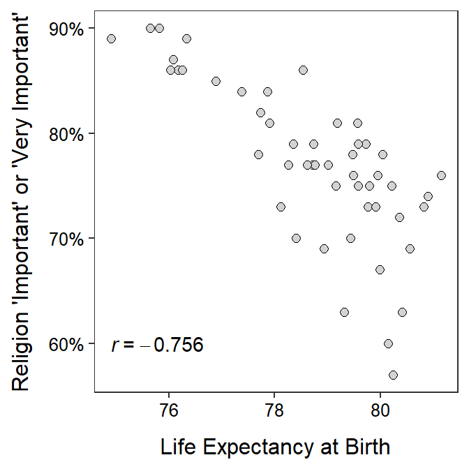

Scatterplots
 Kelly (1998) used data from the Christmas Bird Count (in 1994) to examine the latitudinal variation in the sex ratio of Eastern Belted Kingfishers (Ceryle alcyo). The scatterplot below illustrates the relationship between the percent of female Kingfishers and the latitude of the survey.
Kelly (1998) used data from the Christmas Bird Count (in 1994) to examine the latitudinal variation in the sex ratio of Eastern Belted Kingfishers (Ceryle alcyo). The scatterplot below illustrates the relationship between the percent of female Kingfishers and the latitude of the survey.

Use this scatterplot to answer these questions.
- What is an individual in this example?
- What types of variables are the two variables used here?
- What was the maximum latitude examined?
- What was the minimum percent of females observed?
- What are the values for both variables for the point at the very top of the plot?
- How many surveys recorded fewer than 30% female Kingfishers?
- How many surveys were between 40 and 45oN?
- What is the association exhibited in this plot?
Associations I
For each situation below, identify (a) the response variable (if possible) and (b) whether you would expect a positive, negative, or no (neutral) association between the pair of variables. Explain your reasoning for both answers.
- Weight and gas mileage of a car.
- Proportion of the population that was vaccinated and proportion of the population that became ill.
- The expected salary of an individual and how many years they invested in post-secondary education.
- Exam score and age of the student’s mother.
- Mean summer temperature and proportion of households that have an air conditioner (recorded for communities from across the U.S.).
Animal Fat and Breast Cancer
 Carroll (1975) examined the relationship between per capita consumption of animal fat (g/day) and age-adjusted death rate from breast cancer for 39 countries. Use the following results from her data to describe the bivariate relationship between these two variables (i.e., perform a bivariate EDA).
Carroll (1975) examined the relationship between per capita consumption of animal fat (g/day) and age-adjusted death rate from breast cancer for 39 countries. Use the following results from her data to describe the bivariate relationship between these two variables (i.e., perform a bivariate EDA).

Religiosity
Researchers have long examined relationships between “religiosity” (a general term that attempts to measure “how religious” a group of people is) and various factors. In one such study, researchers compared the percent of respondents within a state that stated that religion was either “important” or “very important” to them and the life expectancy at birth by state. Their results are shown below. Use these results to complete a thorough bivariate EDA.
